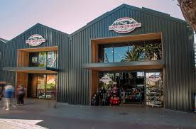
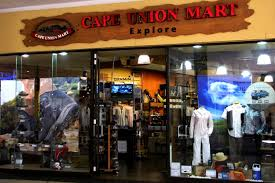

.png)
CAPE ONION MART
In 1933, the late Philip Krawitz opened a store on the corner of Corporation and Mostert streets in Cape Town. It catered primarily for army troops, the navy and passing fishermen. However, Philip soon realised that he had to offer his clientele something special. He focused on building unique relationships with his customers to identify their needs, and Cape Union Mart became affectionately known as "the friendly store". Arthur J. Krawitz succeeded his father in the post-war years and the store prospered by selling summer clothing to South Africans travelling overseas in winter, and vice versa. In 1970, Philip J. Krawitz - Current Executive Chairman of the Board - followed in the footsteps of his father and grandfather. Under his leadership, the Cape Union Mart Group today is the custodian of multiple brands and chains, with more than three-hundred stores across South Africa, Namibia and Botswana. His daughters, Martine and Amanda, work for the company and continue to build on our vision: To be a world-class retailer trusted for its family values and passion to improve lives.
 